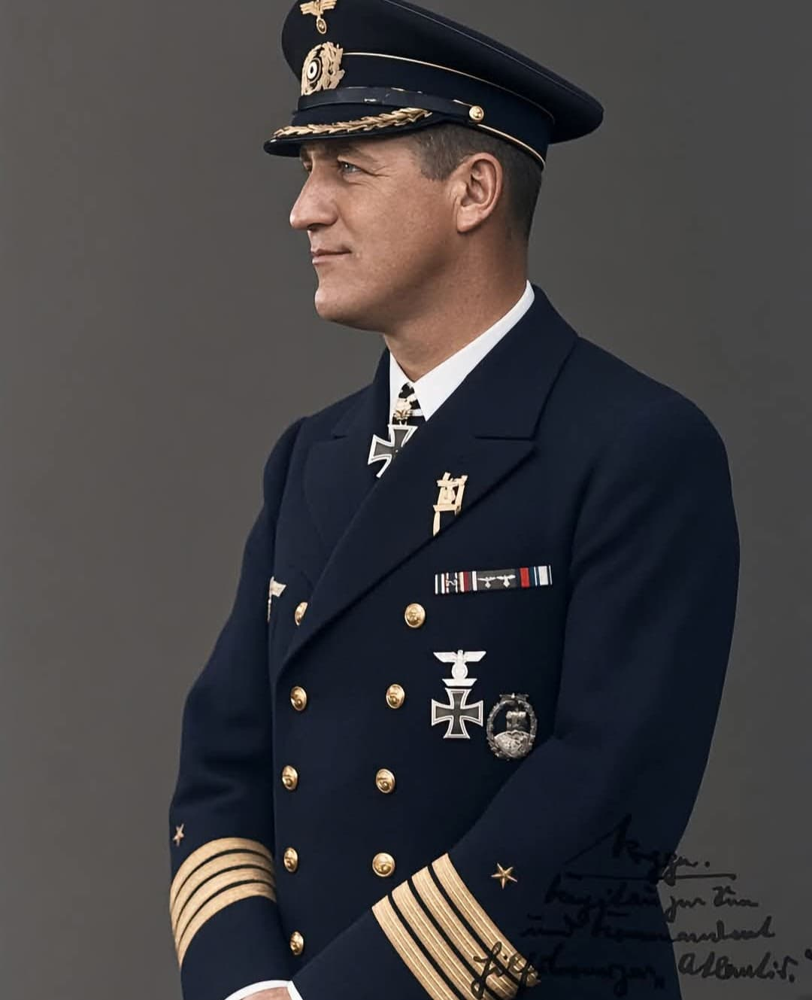
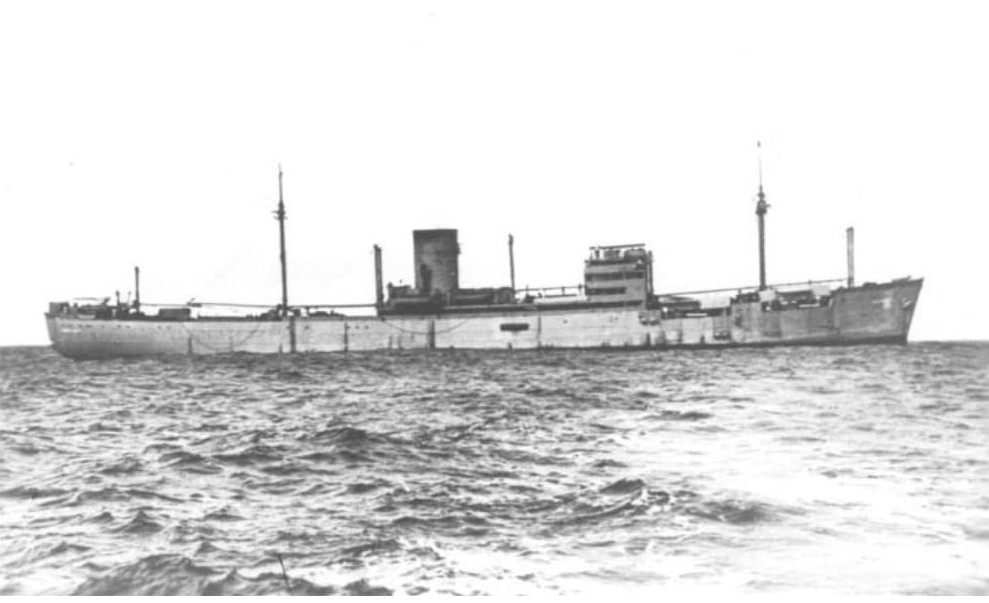
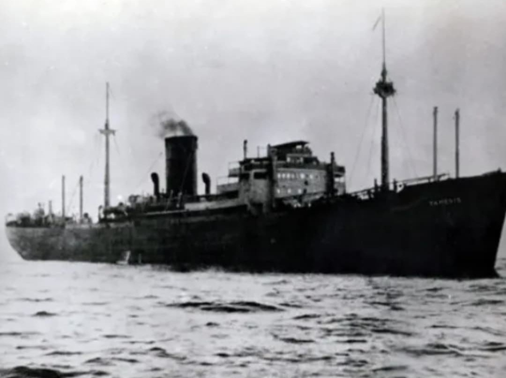
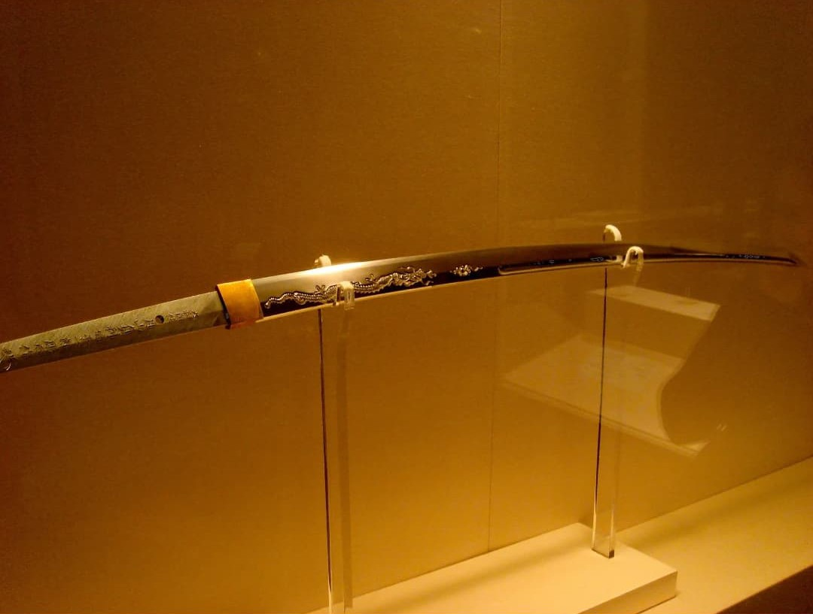

Bernhard Rogge (1899–1982) est l’un des officiers les plus singuliers de la Kriegsmarine. Commandant du corsaire Atlantis, il mène la campagne la plus longue et la plus efficace d’un navire allemand de surface durant la Seconde Guerre mondiale. Respecté par ses propres hommes comme par de nombreux prisonniers alliés, Rogge incarne un code d’honneur naval rare dans un conflit marqué par la brutalité.


Le Hilfskreuzer Atlantis est un croiseur auxiliaire allemand camouflé en navire marchand. Sous le commandement de Rogge, l’Atlantis :
C’est la campagne la plus longue et la plus réussie d’un corsaire allemand de la Seconde Guerre mondiale.

En novembre 1940, l’Atlantis intercepte le cargo britannique SS Automedon. À bord, dans le coffre-fort, se trouvent :
Ces documents sont transmis au Japon, qui les utilise pour préparer l’attaque de Singapour en 1942.

Pour le remercier de la capture de l’Automedon, le Japon impérial offre à Bernhard Rogge un katana de cérémonie. Cet honneur est exceptionnel : très peu d’étrangers reçoivent une telle distinction de la part de l’Empire japonais.
De nombreux marins alliés capturés par l’Atlantis témoignent du comportement correct et humain de Rogge. Il :
Ce comportement lui vaut un respect rare chez ses adversaires.
Après la guerre, Bernhard Rogge n’est pas poursuivi pour crimes de guerre. Son comportement envers les prisonniers joue en sa faveur. Il poursuit une carrière dans la marine marchande et reste une figure à part dans l’histoire de la Kriegsmarine : un officier fidèle à un code d’honneur naval.
Bernhard Rogge, commandant du corsaire Atlantis, mène la campagne la plus longue et la plus efficace d’un navire allemand de surface durant la Seconde Guerre mondiale. Par la capture de l’Automedon, il fournit au Japon des informations cruciales sur la défense de Singapour. Respecté par ses prisonniers, il reste une figure paradoxale : un officier de guerre totale, mais attaché à un code d’honneur naval.
Page du Musée HOP WW2 – Section Kriegsmarine & guerre navale